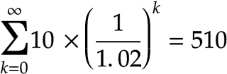

We aren’t into changing the world. That’s too big a task, we’re too small a group. We work smart. We are nudging the world, and this will bring changes larger than we could have ever imagined.
We’ve been thinking about this a very long time. It’s doable. The recipe is actually simple. It has been done before. It worked.
Take a pause here. Let us ask you a question: just how many global issues bother you? How many of them are based in some real, physical limitation?
We can think of a very long list, to name a couple:
We call these issues moronic, because unlike death and disease, there’s nothing stopping the human race from raising above.
Many people have an impression that CEOs of multinational corporations are inherently “evil”. That’s not the truth.
CEOs are simply playing by the rules, laws, regulations and fundamentally mechanical properties of money. It’s a large scale game of Monopoly. You don’t think your friends are evil, when you play Monopoly and they ask you for rent? No, they’re just playing by the rules.
Money is absolutely fundamental to civilization, but it is also totally malleable — after all it is an abstract concept, born of human mind. It’s not a law of nature. We can change how money works.
Natural currencies are the answer to preventing human race from self-destructing. The technical term is demurrage, and it simply means that the longer you hold money, the less you have — negative interest. It’s the same as going grocery shopping; you buy what you need, and not for 3 months ahead, because food spoils.
We aren’t inventing this concept. The ancient Egyptians used this system of money with clay tablets — this is ancient stuff, well forgotten! A modern example, is a little town of Wörgl in Austria, that was booming during the Great Depression. Wait, what, booming during the Great Depression? Yes, in desperation they introduced a local natural currency, and a little town of 4000 people built a reservoir, a ski jump, and a bridge. The national bank shut the experiment down.
Negative interest rate is nothing to be afraid of. Remember, your savings are already being drained by inflation. The difference is in the math, and how it affects financial calculations — precisely the thing that “Big Evil Corporations” do. By changing the mechanics of money — flipping the rules of the game — we make it profitable to keep the Amazon alive, we transform “the root of all evil” into the root of all good.
That is why we created a crypto-currency based on these principles. It’s a one of a kind in the crypto-currency world, because you can’t buy it. We’re not interested in making a bunch of dollars from a token sale like the rest . We’re envisioning a world beyond the dollar, and will do anything in our power to manifest it.
There’s another thing that makes us a unique project. We are building a self-governance and self-organization application on top of our currency, which immediately makes it useful!
Can you think of a better match: a crypto-currency meant to build strong local communities, with a tool making it possible for large groups of people to organize into efficient micro-governments?
The app is meant for organizing a group of people at any level, from a book club to a country; the one key ingredient is that you have to meet on regular basis.
We have prepared a little audio tutorial for you to enjoy.
We are actively looking for funding.
Our vision is a drastically different world. We see a peaceful, green and blue planet, but we are afraid that without adopting a sane form of money, globally, humans will turn it into an uninhabitable dust ball.
To us it is more important than ever to transform our vision into a tangible reality; we have a little human on the way to being born.
We are working harder than ever. All we need to continue the good fight is a bit of support, just some food on our table and a roof over our heads.
Please, please, if you would like to donate, or know of anyone who would fund Plenty, send us a message!
For the curious
In a nutshell, the following is the problem with the dollar. To understand it, you need some proficiency with mathematics and finance.
What if I gave you $10 every year for Infinity? How many dollars would you eventually have? Duh — Infinite amount.
Feel rich yet? Let us burst your bubble.
What is your Infinity of dollars worth? Just a mere $510.
How? Inflation.

The above is a geometric series sum, adding $10 from 0 until Infinity at 2% inflation rate (the current rate in Canada and US). Which is the same as: $10 + $9.80 + … + $8.20 + … + 0.01 + …
Is this not insane to you? How can an Infinite amount of dollars equal a meager $510?
How do you expect a corporation to preserve the Amazon? Yes, the Amazon is of Infinite worth, but because of inflation, financially it’s not.
Natural currencies flip the equation.
They make it profitable to keep the Amazon alive.